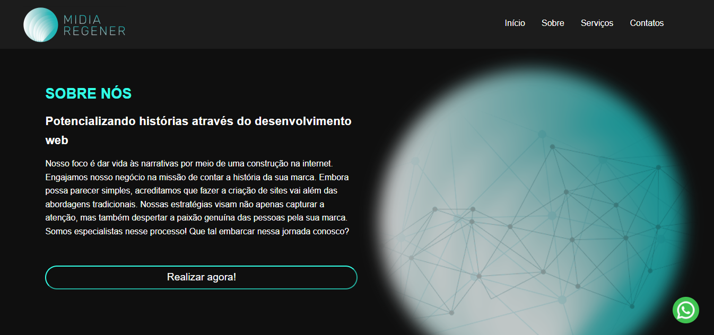
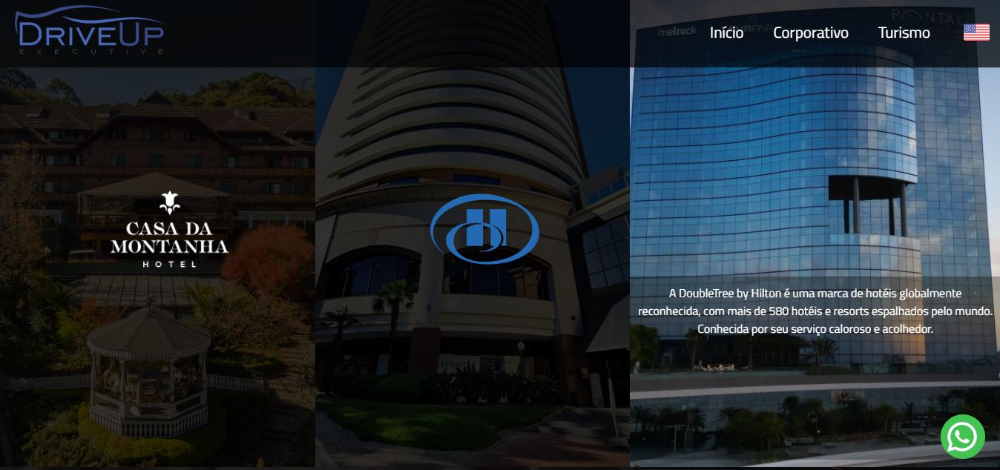
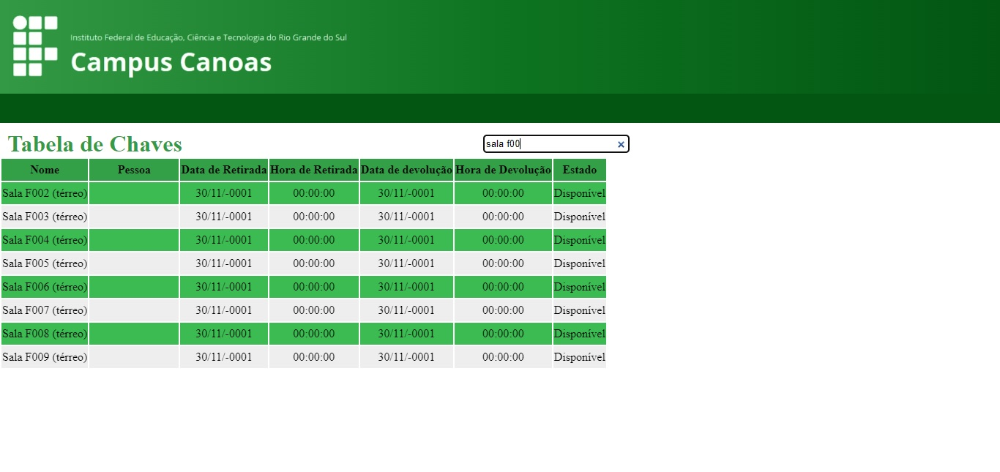

Meus Trabalhos

Site desenvolvido para a empresa Midia Regener.

Site desenvolvido para a empresa DriveUp. Esta empresa trabalha com transporte executivo de luxo em Porto Alegre, região metropolitana, Serra Gaúcha e na Flórida, nos EUA.

Sistema de claviculário desenvolvido para gerir as chaves do IFRS Campus Canoas. O sistema foi desenvolvido utilizando PHP e MySql e possui as funções: cadastro de chaves; empréstimo de chaves(retirada e devolução), consulta e histórico de operações.